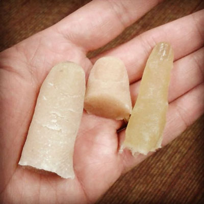

Details
Course: CSE 40537 / 60537 Biometrics
Instructor: Daniel Moreira (dhenriq1@nd.edu)
Lectures: TUE and THR, 5:05 to 6:20 PM, 125 DeBartolo Hall1
Office Hours: MON and WED, 2:00 to 4:00 PM, 150N Fitzpatrick Hall1
Lectures: TUE and THR, 2:00 to 3:15 PM, at Zoom1
Office Hours: TUE and THR, 5:05 to 6:20 PM, at Zoom1
Students are not obligated to attend classes at 2:00 pm, but are certainly welcome. All classes are being recorded with Panopto.
Slack: https://cse-biometrics-spr20.slack.com (now deactivated)
Panopto: https://bit.ly/33ZkU97
Zoom: https://notredame.zoom.us/my/dmoreira
Course grades are now available. 
Progress
- 01/14/2020 - Syllabus, Course details.
- 01/16/2020 - Basics I, Biometrics, traits, and systems.
- 01/21/2020 - Basics II, Errors, metrics, and attacks.
- 01/23/2020 - 1st Coding Class, Implementation of metrics.
- 01/28/2020 - Fingerprint Recog. I, History and features.
- 01/30/2020 - Fingerprint Recog. II, Acquisition and enhancement.
- 02/04/2020 - Fingerprint Recog. III, Minutiae detection.
- 02/06/2020 - Fingerprint Data Collection, password with instructor.
- 02/11/2020 - 2nd Coding Class, Minutiae-based recognition.
- 02/13/2020 - 2nd Coding Class, continuation.
- 02/18/2020 - Face Recog. I, Why faces and faces vs. fingerprints.
- 02/20/2020 - Face Recog. II, Acquisition and enhancement.
- 02/25/2020 - Face Recog. III, Description and matching.
- 02/27/2020 - 3rd Coding Class, Face recognition.
- 03/03/2020 - Fingerprints assignment, Developers’ day.
- 03/05/2020 - Fingerprints assignment, Attackers’ day.
- 03/10/2020 - Spring Break.
- 03/12/2020 - Spring Break.
- 03/17/2020 - Extended Spring Break1.
- 03/18/2020 - Extended Spring Break1.
- 03/24/2020 - New Course Directions1.
- 03/26/2020 - Iris Recog. I, Why irises and irises vs. other traits.
- 03/31/2020 - Iris Recog. II, Acquisition and enhancement.
- 04/02/2020 - Iris Recog. III, Description and matching.
- 04/07/2020 - 4th Coding Class, Iris recognition.
- 04/09/2020 - Multibiometrics, Other traits, data fusion.
- 04/14/2020 - 1st Invited Talk, Dr. Andrey Kuehlkamp.
- 04/16/2020 - 2nd Invited Talk, Dr. Adam Czajka.
- 04/21/2020 - Faces assignment, Developers’ day.
- 04/23/2020 - Irises assignment, Developers’ day.
- 04/28/2020 - Assignment Report due date.
- 05/04/2020 - Final exam, see grades.
Important Dates
03/03/2020 - Fingerprints assignment, Developers’ day.03/05/2020 - Fingerprints assignment, Attackers’ day.03/31/2020 - Faces assignment, Developers’ day.104/02/2020 - Faces assignment, Attackers’ day.104/14/2020 - Irises assignment, Developers’ day.104/16/2020 - Irises assignment, Attackers’ day.104/28/2020 - Last assignment, Collaboration day.104/14/2020 (5:05 PM at Zoom) - Dr. Andrey Kuehlkamp’s talk.04/16/2020 (5:05 PM at Zoom) - Dr. Adam Czajka’s talk.04/21/2020 - Faces assignment, Developers’ day1.04/23/2020 - Irises assignment, Developers’ day1.04/28/2020 - Final Report due date1.05/04/2020 - Final exam.
Invited Talks
| Dr. Andrey Kuehkamp Postdoctoral Research Associate at the Center for Research Computing, University of Notre Dame |
 |
Dr. Adam Czajka Assistant Professor at the Department of Computer Science and Engineering, University of Notre Dame |
| Is this eye alive or artificial? Oh wait, maybe it’s dead? Detection of unknown presentation attacks in biometrics. Presentation attacks are those physical presentations to a biometric system that aim at driving it into an incorrect decision. Rediscovered recently in general computer vision community (and raising a significant interest; look — for instance — for famous stop sign attacks on deep learning-based object detection models), these attacks are known in biometrics for several decades. In this talk, I will use iris recognition as an example and will present the huge creativity of attackers in using various artifacts (printouts, patterned contact lenses, plastic eyes, GAN-generated fakes and… dead eyes) to spoof a system. Although training a model to recognize each of these presentation attack instruments is relatively easy and works well, a big challenge now is how to build models that generalize onto unknown attack types, going beyond our understanding of attackers’ creativity when training our models. I will present a few methods we are exploring in our research to provide presentation attack detection methods that perform promisingly in open-set classification scenario. |
Links
- Classroom recording notification.
- Yale face dataset, used to replace face acquisition1.
- CASIA-IrisV1, used to replace iris acquisition1.
Biometrics on the News
Posted by the students and the instructor on Slack:
https://vancouversun.com/news/local-news/biometric-opioid-vending-machine-unveiled-in-vancouver
https://www.nytimes.com/2020/01/18/technology/clearview-privacy-facial-recognition.html
https://www.landmobile.co.uk/news/metropolitan-police-service-nec-live-facial-recognition/
https://www.nytimes.com/2020/01/20/opinion/facial-recognition-ban-privacy.html
https://www.nytimes.com/2020/02/06/business/facial-recognition-schools.html
https://www.cnn.com/2020/02/26/tech/clearview-ai-hack/index.html
https://arstechnica.com/information-technology/2020/04/attackers-can-bypass-fingerprint-authentication-with-an-80-success-rate/
COVID-19
1: Modified/canceled due to COVID-19.
Acknowledgments
This course is heavily based on Dr. Adam Czajka’s and Dr. Walter Scheirer’s previous Biometrics courses. I sincerely thank them for kindly allowing me to rely upon their materials.